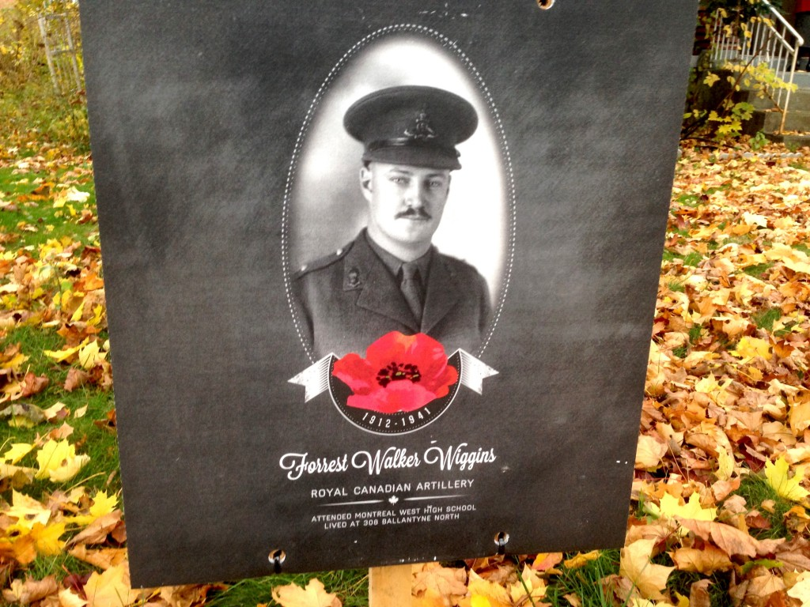

A few weeks back, I was sitting on the couch, alone, writing my Common App personal essay (for the fourth time) when I heard a knock at the door. Outside stood a middle aged man with a sign balanced in his arm, and a large hammer in the other. He was here to “put up the sign,” I overheard. I was, at that time, unaware of the small project my town had recently undertaken, to be revealed to you shortly. I later walked outside to inspect the sign that was now planted on my lawn, and found the following:

Unbeknownst to me, my town had made a small project of identifying all the buildings once homes to soldiers lost to both world wars.
In my personal case, the walls I now live in had once been residence to an artillery soldier by the name of Cpt. Forrest Walker Wiggins. From the short obituary written about him in the Montreal Gazette in 1941, we know that he attended what is now Royal West Academy, and went on to become a three season athlete at McGill. Inspired by his family before him, he dreamed of becoming a serviceman one day, and was granted this wish in 1935. He was among the first waves of soldiers deployed by the Canadian Forces, arriving in England on Christmas day of 1940. He was killed merely three months later, the cause of his death lost to the ages. He was twenty eight years old.